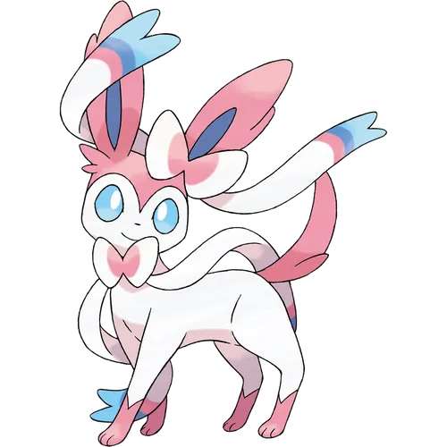

님피아는 포켓몬스터 5세대에 추가된 전기쥐 포켓몬이다.
모티브는 모몬가.
그래서인지 이 녀석은 피카츄 및 파치리스(다람쥐)와 더 유사하다.
야생에서는 하나지방 전역의 흔들리는 풀숲에서 가끔 출현하는데
대부분 다부니가 나오기 때문에 매우 보기 어렵다.
대신 하나 7번도로에서 암트르와
교환하고 싶어하는 NPC가 있으므로 쉽게 얻을 수 있다.
교환받은 에몽가는
방어 개체치가 V고정에 성격이 촐랑이어서 물리공격에는 에몽가치고는 잘 버티지만
특수공격엔 종잇장처럼 녹아내리니 주의
.
그리고 그 NPC는 암트르가 질렸는지 BW2에서 기가이어스와 에몽가를 교환해 준다.
